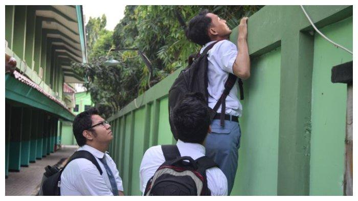

Bolos Sekolah
Apa Itu Bolos Sekolah?
Bolos sekolah adalah tindakan yang dilakukan oleh seorang siswa yang tidak hadir atau sengaja meninggalkan kegiatan belajar di sekolah tanpa izin. Hal ini sering kali dianggap sebagai perilaku negatif yang dapat memengaruhi proses belajar dan perkembangan karakter siswa. Dalam laporan ini, akan dibahas mengenai faktor-faktor yang menyebabkan siswa bolos, dampak negatifnya, serta upaya yang dapat dilakukan untuk mengatasi masalah ini.
Faktor Penyebab
- Kurangnya Minat dan Motivasi Belajar
- Masalah Keluarga
- Pengaruh Teman
- Kesehatan yang Buruk
- Tekanan Akademik atau Sosial
Siswa yang tidak merasa tertarik dengan pelajaran atau tidak memahami pentingnya pendidikan cenderung merasa bosan dan enggan datang ke sekolah.
Permasalahan dalam keluarga seperti perselisihan orangtua, masalah ekonomi, atau kurangnya perhatian dari orang tua dapat menyebabkan siswa merasa tidak terdukung dan akhirnya memilih untuk bolos.
Lingkungan pertemanan yang tidak sehat, seperti pertemanan dengan siswa yang sering bolos atau terlibat dalam aktivitas negatif, dapat memengaruhi sikap siswa untuk ikut serta dalam bolos.
Siswa yang sering sakit atau merasa tidak sehat mungkin memilih untuk tidak datang ke sekolah, meskipun alasan ini bisa dibenarkan jika siswa benar-benar membutuhkan istirahat.
Tekanan untuk berprestasi tinggi, ketidakmampuan untuk mengikuti pelajaran, atau rasa takut terhadap ujian dapat membuat siswa merasa cemas dan memilih untuk menghindari sekolah.
Dampak Bolos Sekolah
- Keterlambatan dalam Pembelajaran
- Menurunnya Prestasi Akademik
- Masalah Sosial dan Psikologis
- Perilaku Negatif Lainnya
- Dampak pada Reputasi Sekolah
Siswa yang sering bolos akan tertinggal dalam materi pelajaran yang diajarkan di sekolah, yang dapat menghambat perkembangan akademik mereka.
Siswa yang tidak hadir secara teratur di kelas cenderung memiliki nilai yang lebih rendah dan kesulitan dalam mengikuti ujian atau tes.
Bolos sekolah dapat menyebabkan siswa merasa terisolasi, kehilangan rasa percaya diri, atau bahkan mengalami stres dan kecemasan yang lebih besar.
Siswa yang terbiasa bolos sekolah mungkin terlibat dalam perilaku negatif lainnya, seperti merokok, mengonsumsi alkohol, atau terlibat dalam aktivitas kriminal.
Banyaknya siswa yang bolos dapat menurunkan reputasi sekolah, baik di mata masyarakat maupun dalam penilaian prestasi akademik secara keseluruhan.
Solusi Bolos Sekolah
- Meningkatkan Minat dan Motivasi Belajar
- Melibatkan Orang Tua
- Membangun Lingkungan yang Positif
- Memberikan Dukungan Psikologis
- Pengawasan yang Lebih Ketat
Sekolah perlu menciptakan suasana belajar yang menarik dan menyenangkan bagi siswa. Ini bisa dilakukan dengan metode pengajaran yang inovatif, pembelajaran berbasis teknologi, serta memberi penghargaan bagi siswa yang berprestasi.
Orang tua memiliki peran penting dalam mengawasi perkembangan dan kebiasaan belajar anak-anak mereka. Sekolah harus bekerja sama dengan orang tua untuk mendeteksi dan mengatasi masalah yang mungkin terjadi di rumah.
Menciptakan lingkungan sekolah yang positif dan inklusif dapat membantu mengurangi tekanan sosial yang dirasakan siswa. Aktivitas ekstrakurikuler dan program pendampingan dapat menjadi solusi untuk memperkuat hubungan antar siswa.
Konseling dan layanan psikologis di sekolah dapat membantu siswa yang mengalami tekanan emosional atau psikologis. Dengan bantuan yang tepat, siswa bisa lebih mudah menghadapi tantangan yang ada.
Pihak sekolah perlu lebih mengawasi kehadiran siswa dan memberi sanksi yang sesuai bagi siswa yang sering bolos. Namun, sanksi yang diberikan haruslah bersifat mendidik dan memperbaiki perilaku, bukan sekadar menghukum.
Kesimpulan
Bolos sekolah adalah masalah serius yang memerlukan perhatian khusus dari berbagai pihak, termasuk siswa, orang tua, dan pihak sekolah. Dengan pendekatan yang tepat, baik melalui peningkatan motivasi belajar, dukungan psikologis, maupun pengawasan yang lebih baik, diharapkan jumlah siswa yang bolos sekolah dapat berkurang. Hal ini penting agar siswa bisa mendapatkan pendidikan yang optimal dan mengembangkan potensi mereka dengan baik.